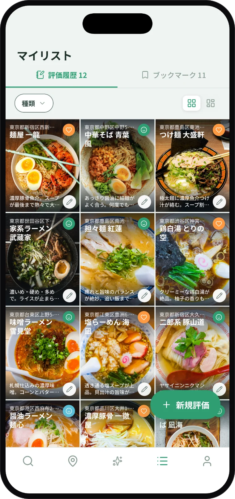
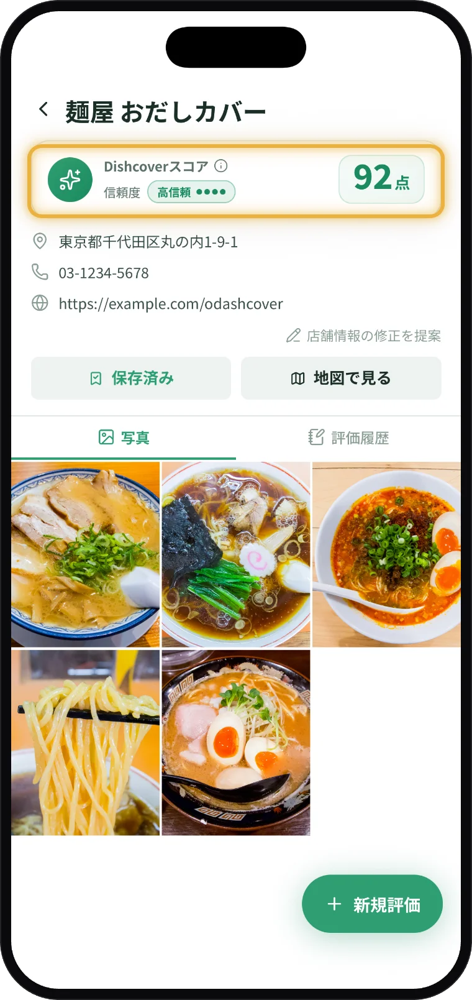
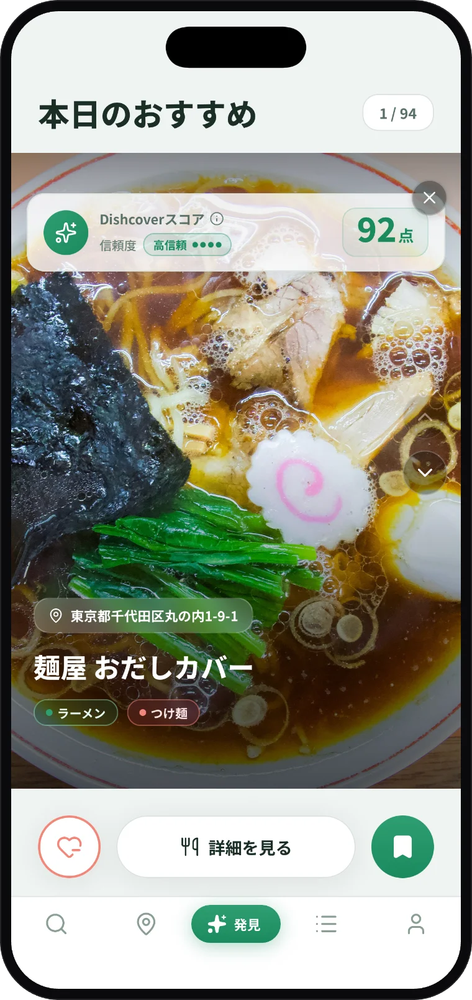

口コミ不要で、
簡単・綺麗に記録。
記録するほど、好みに合うお店を見つけやすく。
- ✓口コミコメント不要
- ✓4段階評価でサッと記録
- ✓写真付きで綺麗に保存

対応エリア現在は関東のラーメン店に先行対応。
対応エリア・ジャンルは順次拡大予定です。


対応エリア・ジャンルは順次拡大予定です。
記録するほど、好みに合うお店を見つけやすく。

評価とコメントはあなたにしか見えません。だから人目を気にすることなく本音でサクッと記録できます。
評価と一緒に残した写真は、自動で整列。カメラロールに埋もれていた「あの日の１食」が、いつ開いても綺麗に並びます。
店名・コメントでの検索や、訪問期間・エリア・評価種類での絞り込みにも対応。目当ての一軒が、すぐ見つかります。
Dishcoverスコアは、そのお店があなたの好みにどれくらい合いそうかを表す0-100点のスコアです。あなた自身の評価やブックマーク等のリアクションから好みを学習し、お店選びをサポートします。
「みんなの高評価」だけでは分からない、自分との相性を見つけやすくします。


あなたが検索せずとも、好みに合いそうなお店をDishcoverが日々推薦します。
「検索」では出会えなかったお店を「発見」できます。